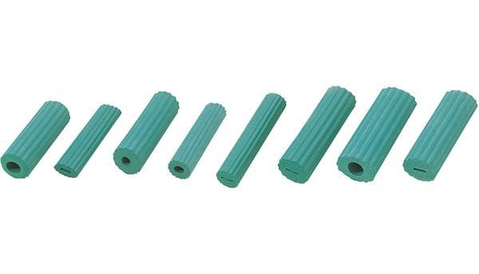
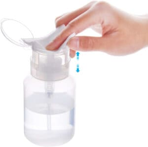
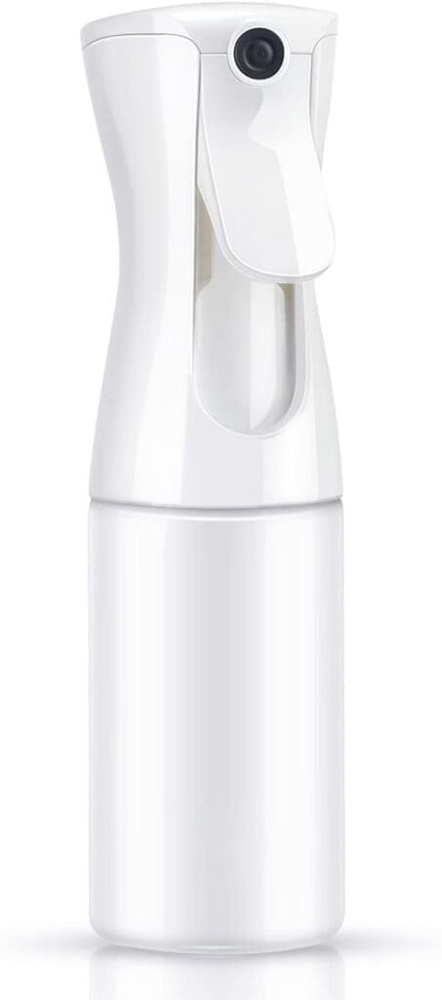

化粧と道具について
今回は化粧道具・化粧をする事によってどの様な変化があったのか、
現職の作業療法士Kさんにお聞きしましたのでご紹介させて頂きます。
★今回情報提供して頂いたKさんの活動
普段は作業療法士として都内の療養病院に勤務しているKさんは、
現在勤務している病院が療養期なので疾患問わず主に高齢者の患者さまに対して化粧支援を実施しており,
作業療法の中では『ご自身でお化粧ができるようになる』というを目的に支援しております。
お化粧をすることで、積極性の向上やポジティブな感情になるというエビデンスがあります。
実際に発話が増えたり自発的なコミュニケーションをとられるようになられる方はおりました！
★化粧を通した患者様の変化
・作業療法内で、習慣的にお化粧をする時間を取り入れた事で積極性が向上し、 自発話が増加した
・お化粧をした後では、笑顔が増えて、表情変化が豊かになる
・覚醒が乏しい方にスキンケアやヘアセットを行ってもらうことで、覚醒時間が 延長する
・おすすめの化粧品道具
◉アイブローやメイクブラシににつけるグリップ
商品はこちらから◉ポンプ型の化粧水容器
商品はこちらから◉スプレー型の化粧水容器
商品はこちらから化粧や道具に関して悩みのある方は一度お試ししてはいかがでしょうか？
※アイデアノートは個人の感想や体験談の為、すべての方に当てはまるわけではありません。
(情報提供者 女性)